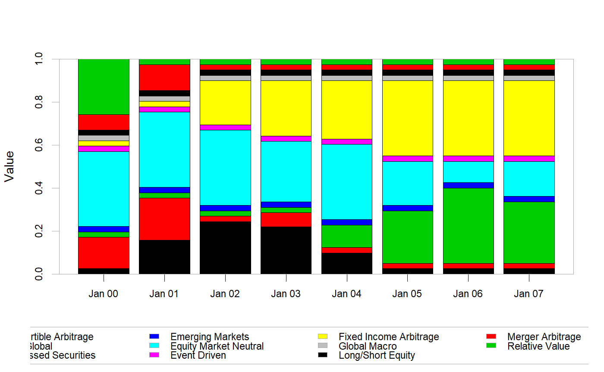
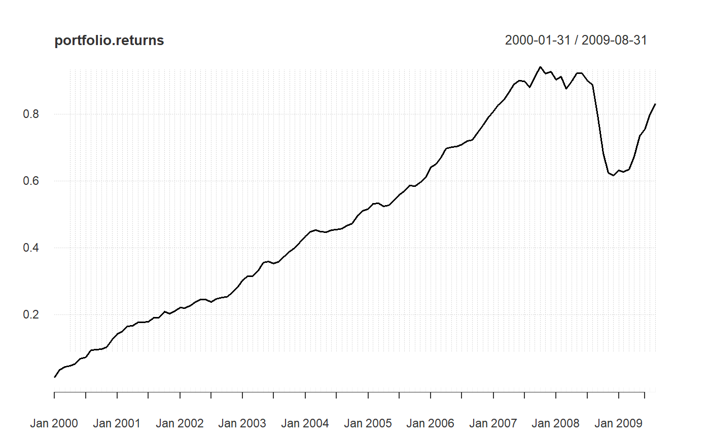
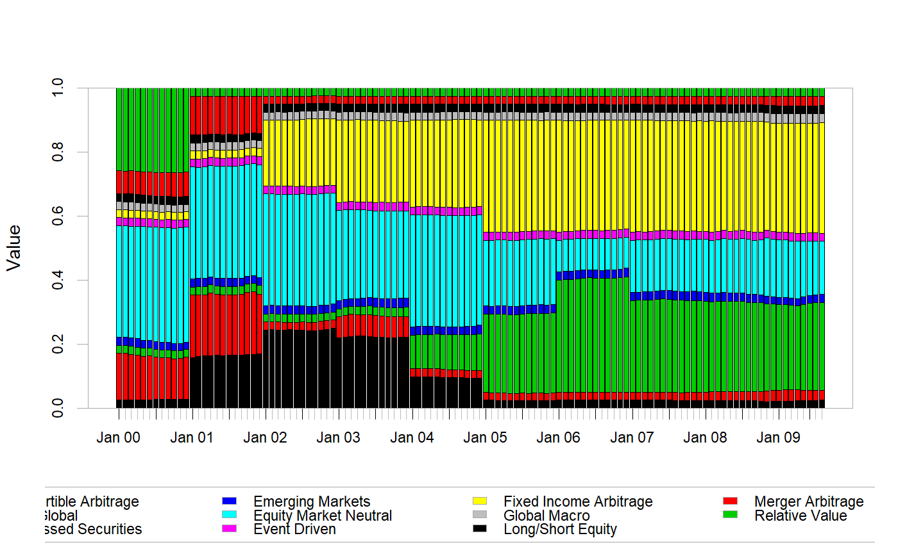
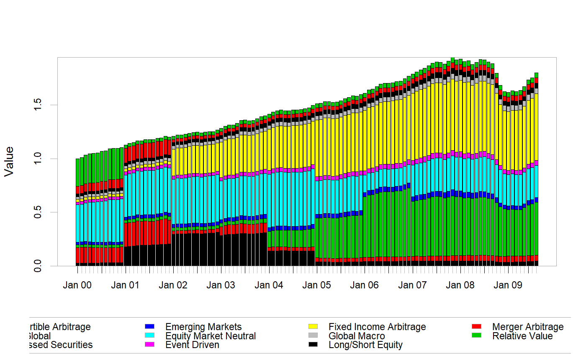

Using a time series of returns and any regular or irregular time series of weights for each asset, this function calculates the returns of a portfolio with the same periodicity of the returns data.
Return.portfolio(R, weights = NULL, wealth.index = FALSE, contribution = FALSE, geometric = TRUE, rebalance_on = c(NA, "years", "quarters", "months", "weeks", "days"), value = 1, verbose = FALSE, ...)
| R | An xts, vector, matrix, data frame, timeSeries or zoo object of asset returns |
|---|---|
| weights | A time series or single-row matrix/vector containing asset weights, as decimal percentages, treated as beginning of period weights. See Details below. |
| wealth.index | TRUE/FALSE whether to return a wealth index. Default FALSE |
| contribution | if contribution is TRUE, add the weighted return contributed by the asset in a given period. Default FALSE |
| geometric | utilize geometric chaining (TRUE) or simple/arithmetic (FALSE) to aggregate returns. Default TRUE. |
| rebalance_on | Default "none"; alternatively "daily" "weekly" "monthly"
"annual" to specify calendar-period rebalancing supported by
|
| value | The beginning of period total portfolio value. This is used for calculating position value. |
| verbose | If verbose is TRUE, return a list of intermediary calculations. See Details below. |
| … | any other passthru parameters. Not currently used. |
returns a time series of returns weighted by the weights
parameter, or a list that includes intermediate calculations
By default, this function calculates the time series of portfolio returns given asset returns and weights. In verbose mode, the function returns a list of intermediary calculations that users may find helpful, including both asset contribution and asset value through time.
When asset return and weights are matched by period, contribution is simply the weighted return of the asset. c_i = w_i * R_i Contributions are summable across the portfolio to calculate the total portfolio return.
Contribution cannot be aggregated through time. For example, say we have an equal weighted portfolio of five assets with monthly returns. The geometric return of the portfolio over several months won't match any aggregation of the individual contributions of the assets, particularly if any rebalancing was done during the period.
To aggregate contributions through time such that they are summable to the geometric returns of the portfolio, the calculation must track changes in the notional value of the assets and portfolio. For example, contribution during a quarter will be calculated as the change in value of the position through those three months, divided by the original value of the portfolio. Approaching it this way makes the calculation robust to weight changes as well. c_pi = V_(t-p)i - V_t)/V_ti
If the user does not specify weights, an equal weight portfolio is assumed. Alternatively, a vector or single-row matrix of weights that matches the length of the asset columns may be specified. In either case, if no rebalancing period is specified, the weights will be applied at the beginning of the asset time series and no further rebalancing will take place. If a rebalancing period is specified, the portfolio will be rebalanced to the starting weights at the interval specified.
Note that if weights is an xts object, then any value passed to
rebalance_on is ignored. The weights object specifies the
rebalancing dates, therefore a regular rebalancing frequency provided via
rebalance_on is not needed and ignored.
Return.portfolio will work only on daily or lower frequencies. If you are
rebalancing intraday, you should be using a trades/prices framework like
the blotter package, not a weights/returns framework.
Irregular rebalancing can be done by specifying a time series of weights. The function uses the date index of the weights for xts-style subsetting of rebalancing periods.
Weights specified for rebalancing should be thought of as "end-of-period" weights. Rebalancing periods can be thought of as taking effect immediately after the close of the bar. So, a March 31 rebalancing date will actually be in effect for April 1. A December 31 rebalancing date will be in effect on Jan 1, and so forth. This convention was chosen because it fits with common usage, and because it simplifies xts Date subsetting via endpoints.
In verbose mode, the function returns a list of data and intermediary calculations.
returns: The portfolio returns.
contribution: The per period contribution to portfolio
return of each asset. Contribution is calculated as BOP weight times the
period's return divided by BOP value. Period contributions are summed
across the individual assets to calculate portfolio return
BOP.Weight: Beginning of Period (BOP) Weight for each
asset. An asset's BOP weight is calculated using the input weights
(or assumed weights, see below) and rebalancing parameters given. The next
period's BOP weight is either the EOP weights from the prior period or
input weights given on a rebalance period.
EOP.Weight: End of Period (BOP) Weight for each asset.
An asset's EOP weight is the sum of the asset's BOP weight and
contribution for the period divided by the sum of the contributions and
initial weights for the portfolio.
BOP.Value: BOP Value for each asset. The BOP value for each
asset is the asset's EOP value from the prior period, unless there is a
rebalance event. If there is a rebalance event, the BOP value of the
asset is the rebalance weight times the EOP value of the portfolio. That
effectively provides a zero-transaction cost change to the position values
as of that date to reflect the rebalance. Note that the sum of the BOP
values of the assets is the same as the prior period's EOP portfolio value.
EOP.Value: EOP Value for each asset. The EOP value is for
each asset is calculated as (1 + asset return) times the asset's BOP value.
The EOP portfolio value is the sum of EOP value across assets.
To calculate BOP and EOP position value, we create an index for each position. The
sum of that value across assets represents an indexed value of the total portfolio.
Note that BOP and EOP position values are only computed when geometric = TRUE.
From the value calculations, we can calculate different aggregations through time for the asset contributions. Those are calculated as the EOP asset value less the BOP asset value; that quantity is divided by the BOP portfolio value. Across assets, those will sum to equal the geometric chained returns of the portfolio for that same time period. The function does not do this directly, however.
This function was previously two functions: Return.portfolio and
Return.rebalancing. Both function names are still exported,
but the code is now common, and Return.portfolio is probably to be preferred.
Bacon, C. Practical Portfolio Performance Measurement and Attribution. Wiley. 2004. Chapter 2
data(edhec) Return.portfolio(edhec["1997",1:5], rebalance_on="quarters") # returns time series#> portfolio.returns #> 1997-01-31 0.033400000 #> 1997-02-28 0.023762011 #> 1997-03-31 -0.001413340 #> 1997-04-30 0.003680000 #> 1997-05-31 0.017660872 #> 1997-06-30 0.025452430 #> 1997-07-31 0.036500000 #> 1997-08-31 -0.005136602 #> 1997-09-30 0.022049167 #> 1997-10-31 -0.010780000 #> 1997-11-30 -0.002621013 #> 1997-12-31 0.012985944Return.portfolio(edhec["1997",1:5], rebalance_on="quarters", verbose=TRUE) # returns list#> $returns #> portfolio.returns #> 1997-01-31 0.033400000 #> 1997-02-28 0.023762011 #> 1997-03-31 -0.001413340 #> 1997-04-30 0.003680000 #> 1997-05-31 0.017660872 #> 1997-06-30 0.025452430 #> 1997-07-31 0.036500000 #> 1997-08-31 -0.005136602 #> 1997-09-30 0.022049167 #> 1997-10-31 -0.010780000 #> 1997-11-30 -0.002621013 #> 1997-12-31 0.012985944 #> #> $contribution #> Convertible Arbitrage CTA Global Distressed Securities #> 1997-01-31 0.002380000 0.0078600000 0.0035600000 #> 1997-02-28 0.002408819 0.0059940275 0.0024031662 #> 1997-03-31 0.001510442 -0.0004248891 -0.0002337074 #> 1997-04-30 0.001720000 -0.0034000000 0.0006000000 #> 1997-05-31 0.003135294 -0.0002938187 0.0046568428 #> 1997-06-30 0.004252156 0.0016336242 0.0043610924 #> 1997-07-31 0.003860000 0.0118200000 0.0046800000 #> 1997-08-31 0.002635527 -0.0096662672 0.0029028423 #> 1997-09-30 0.002444218 0.0038748559 0.0070493383 #> 1997-10-31 0.002000000 -0.0019600000 -0.0012800000 #> 1997-11-30 0.000000000 0.0026626352 0.0010847819 #> 1997-12-31 0.001392218 0.0058170647 0.0014782579 #> Emerging Markets Equity Market Neutral #> 1997-01-31 0.015820000 0.0037800000 #> 1997-02-28 0.010964341 0.0019916567 #> 1997-03-31 -0.002576485 0.0003112995 #> 1997-04-30 0.002380000 0.0023800000 #> 1997-05-31 0.006351596 0.0038109577 #> 1997-06-30 0.011874480 0.0033310776 #> 1997-07-31 0.011200000 0.0049400000 #> 1997-08-31 -0.001344834 0.0003361293 #> 1997-09-30 0.004659301 0.0040214532 #> 1997-10-31 -0.011440000 0.0019000000 #> 1997-11-30 -0.007205240 0.0008368108 #> 1997-12-31 0.002942265 0.0013561387 #> #> $BOP.Weight #> Convertible Arbitrage CTA Global Distressed Securities #> 1997-01-31 0.2000000 0.2000000 0.2000000 #> 1997-02-28 0.1958390 0.2011419 0.1969808 #> 1997-03-31 0.1936464 0.2023282 0.1947562 #> 1997-04-30 0.2000000 0.2000000 0.2000000 #> 1997-05-31 0.2009804 0.1958792 0.1998645 #> 1997-06-30 0.2005734 0.1921911 0.2009720 #> 1997-07-31 0.2000000 0.2000000 0.2000000 #> 1997-08-31 0.1966811 0.2043608 0.1974723 #> 1997-09-30 0.2003458 0.1956998 0.2014097 #> 1997-10-31 0.2000000 0.2000000 0.2000000 #> 1997-11-30 0.2042013 0.2001981 0.2008855 #> 1997-12-31 0.2047379 0.2033939 0.2025011 #> Emerging Markets Equity Market Neutral #> 1997-01-31 0.2000000 0.2000000 #> 1997-02-28 0.2088446 0.1971937 #> 1997-03-31 0.2147071 0.1945622 #> 1997-04-30 0.2000000 0.2000000 #> 1997-05-31 0.2016380 0.2016380 #> 1997-06-30 0.2043800 0.2018835 #> 1997-07-31 0.2000000 0.2000000 #> 1997-08-31 0.2037627 0.1977231 #> 1997-09-30 0.2034629 0.1990818 #> 1997-10-31 0.2000000 0.2000000 #> 1997-11-30 0.1906148 0.2041002 #> 1997-12-31 0.1838916 0.2054756 #> #> $EOP.Weight #> Convertible Arbitrage CTA Global Distressed Securities #> 1997-01-31 0.1958390 0.2011419 0.1969808 #> 1997-02-28 0.1936464 0.2023282 0.1947562 #> 1997-03-31 0.1954330 0.2021890 0.1947978 #> 1997-04-30 0.2009804 0.1958792 0.1998645 #> 1997-05-31 0.2005734 0.1921911 0.2009720 #> 1997-06-30 0.1997416 0.1890138 0.2002366 #> 1997-07-31 0.1966811 0.2043608 0.1974723 #> 1997-08-31 0.2003458 0.1956998 0.2014097 #> 1997-09-30 0.1984151 0.1952691 0.2039618 #> 1997-10-31 0.2042013 0.2001981 0.2008855 #> 1997-11-30 0.2047379 0.2033939 0.2025011 #> 1997-12-31 0.2034876 0.2065290 0.2013644 #> Emerging Markets Equity Market Neutral #> 1997-01-31 0.2088446 0.1971937 #> 1997-02-28 0.2147071 0.1945622 #> 1997-03-31 0.2124308 0.1951493 #> 1997-04-30 0.2016380 0.2016380 #> 1997-05-31 0.2043800 0.2018835 #> 1997-06-30 0.2108869 0.2001210 #> 1997-07-31 0.2037627 0.1977231 #> 1997-08-31 0.2034629 0.1990818 #> 1997-09-30 0.2036323 0.1987216 #> 1997-10-31 0.1906148 0.2041002 #> 1997-11-30 0.1838916 0.2054756 #> 1997-12-31 0.1844387 0.2041802 #> #> $BOP.Value #> Convertible Arbitrage CTA Global Distressed Securities #> 1997-01-31 0.2000000 0.2000000 0.2000000 #> 1997-02-28 0.2023800 0.2078600 0.2035600 #> 1997-03-31 0.2048693 0.2140542 0.2060434 #> 1997-04-30 0.2112921 0.2112921 0.2112921 #> 1997-05-31 0.2131092 0.2077001 0.2119260 #> 1997-06-30 0.2164337 0.2073886 0.2168638 #> 1997-07-31 0.2213080 0.2213080 0.2213080 #> 1997-08-31 0.2255792 0.2343873 0.2264866 #> 1997-09-30 0.2286020 0.2233008 0.2298159 #> 1997-10-31 0.2332393 0.2332393 0.2332393 #> 1997-11-30 0.2355716 0.2309535 0.2317465 #> 1997-12-31 0.2355716 0.2340252 0.2329980 #> Emerging Markets Equity Market Neutral #> 1997-01-31 0.2000000 0.2000000 #> 1997-02-28 0.2158200 0.2037800 #> 1997-03-31 0.2271506 0.2058382 #> 1997-04-30 0.2112921 0.2112921 #> 1997-05-31 0.2138065 0.2138065 #> 1997-06-30 0.2205414 0.2178474 #> 1997-07-31 0.2213080 0.2213080 #> 1997-08-31 0.2337012 0.2267743 #> 1997-09-30 0.2321588 0.2271598 #> 1997-10-31 0.2332393 0.2332393 #> 1997-11-30 0.2198980 0.2354550 #> 1997-12-31 0.2115858 0.2364204 #> #> $EOP.Value #> Convertible Arbitrage CTA Global Distressed Securities #> 1997-01-31 0.2023800 0.2078600 0.2035600 #> 1997-02-28 0.2048693 0.2140542 0.2060434 #> 1997-03-31 0.2064673 0.2136047 0.2057962 #> 1997-04-30 0.2131092 0.2077001 0.2119260 #> 1997-05-31 0.2164337 0.2073886 0.2168638 #> 1997-06-30 0.2210221 0.2091514 0.2215698 #> 1997-07-31 0.2255792 0.2343873 0.2264866 #> 1997-08-31 0.2286020 0.2233008 0.2298159 #> 1997-09-30 0.2313909 0.2277221 0.2378595 #> 1997-10-31 0.2355716 0.2309535 0.2317465 #> 1997-11-30 0.2355716 0.2340252 0.2329980 #> 1997-12-31 0.2371735 0.2407183 0.2346988 #> Emerging Markets Equity Market Neutral #> 1997-01-31 0.2158200 0.2037800 #> 1997-02-28 0.2271506 0.2058382 #> 1997-03-31 0.2244247 0.2061675 #> 1997-04-30 0.2138065 0.2138065 #> 1997-05-31 0.2205414 0.2178474 #> 1997-06-30 0.2333548 0.2214419 #> 1997-07-31 0.2337012 0.2267743 #> 1997-08-31 0.2321588 0.2271598 #> 1997-09-30 0.2374752 0.2317484 #> 1997-10-31 0.2198980 0.2354550 #> 1997-11-30 0.2115858 0.2364204 #> 1997-12-31 0.2149712 0.2379808 #># with a weights object data(weights) # rebalance at the beginning of the year to various weights through time chart.StackedBar(weights)x <- Return.portfolio(edhec["2000::",1:11], weights=weights,verbose=TRUE) chart.CumReturns(x$returns)